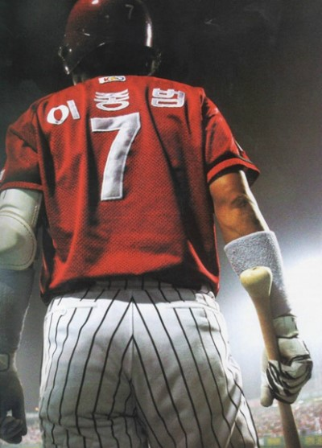

알고 보면 재미있는 야구

목차
- 역사
- 야구장 규격
- 혼란스러운 규칙들
- 불문율
- 명언
역사
- 다양한 설이 존재
- 크리켓에서 유래
- 미국의 애브너 더블데이라는 군인 출신의 인물이 1839년에 쿠퍼스타운에서 창안

역사
-
1845
니커보커즈라는 최초의 야구팀이 조직
경기장도 현재와 같은 다이아몬드 형태가 되었다
-
1846
한 팀을 9명으로 구성하는 규칙이 제정
-
1857
헨리 카드웍이 규칙을 대폭 개정
양 팀의 공격과 수비를 9회로 한정하는 룰이 만들어졌다
-
1867
1867년 월리엄 커밍즈가 커브를 고안하는 등 투수의 투구 기술이 비약적으로 발전
타자들이 단 1점도 뽑지 못하는 셧아웃(shutout) 게임도 자주 발생
그에 따라 투수에게 갖가지 제한이 가해지게 됐는데, 베이스온볼스(base on balls) 규칙이 제정된 것도 그 한 예이다.
-
1869
신시내티 레드스타킹스라는 최초의 프로 야구 팀이 창단되었다
-
1882
1875년 신시내티·세인트루이스·루이스빌 등에서 잇따라 프로 야구 팀이 생겨나 내셔널리그(national league)가 탄생했다.
1882년 아메리칸 어소시에이션이라는 새로운 리그가 만들어졌고, 1901년 아메리칸리그(american league)로 발전했다.
그때부터 미국 프로야구는 내셔널리그와 아메리칸리그라는 양대 리그가 확고히 자리잡았다.
-
1920
보스턴에서 뉴욕으로 팀을 옮긴 베이브 루스가 54개의 홈런을 날린 것을 계기로 새로운 전환점을 맞이했다
어설픈 구식 야구 시대가 가고, 공격과 수비 양면에 걸쳐 더욱 세련된 기술의 현대 야구가 펼쳐지게 된 것이다
비단 프로야구뿐만 아니라 학생들을 중심으로 한 아마추어 야구의 수준도 부쩍 높아지면서 관중 역시 폭발적으로 늘어났다
야구의 황금시대의 시작
-
1905
우리나라에 야구가 정식으로 도입
당시 선교사로 온 미국인 질레트가 황성기독교청년회 회원들에게 야구를 가르친 것이 시초
그 뒤 우리나라 야구는 꾸준히 발전해 1982년 프로야구가 탄생하기에 이르렀다.
야구장
- 야구장 마다 제각각
- 국제 규격 존재
- 광주 챔피언스 경기장이 이에 정확히 일치
- 한국에서 가장 큰 경기장은 서울 잠실구장(125m), 미국은 다저스 스타디움(133m), 일본은 한신 고시엔구장(122m)

메이저리그 야구장


어려운 야구 규칙들
희생 플라이
- retouch
- tag-up
- 언더베이스
Tag out, force out
- Tag out
- 공을쥔 글러브나 손으로 주자를 직접 태그하여 아웃시키는 상황
- Force out
- Force play 상황에서 주자를 아웃시키는 상황
Not out - Strike out not out
- 세 번째 스트라이크를 포수가 받지 못하여 삼진 아웃이 되지 않은 경우
- 타자 주자는 아웃이 아닌 상태로 진루권이 생김
- 단 2아웃이 아닌 상황에서는, 1루에 주자가 없어야 한다
Infield fly
- 무사 혹은 1사 상황에서, 주자가 1,2 루 혹은 만루 상황일때 발생
- 충분히 내야 플라이 아웃이 가능한 상황일때 심판이 선언
- 타자 주자는 자동 아웃
파울
그 밖의 야구 용어들
- 빈볼 (Bean ball)
- 보크 (Balk)
- 지명타자
불문율
- 상대팀에게 모욕적인 행동은 삼가라.
- 점수 차가 많이 났을 때 이기고 있는 팀에서는 도루나 번트를 삼가라
- 홈런 친 뒤 과하게 기쁨을 표현하거나, 베이스를 천천히 돌지 마라
- 타석에서 포수의 사인을 훔쳐보지 마라
- 삼진을 잡은 투수는 과한 제스쳐나 기쁨의 표현은 삼가라
- 상대 투수가 노히트 노런과 같은 대기록 도전 시에는 기습번트를 대지 마라
- 도루시 슬라이딩 하며 스파이크를 높이 쳐들지 마라
- 타자의 머리 뒤로 공을 던지지 마라
- 타자에게 홈런을 맞았다고 다음 타자를 일부러 맞히지 마라
- 상대팀 슈퍼스타를 보호하라
야구 명언
- 야구를 향한 나의 열정은 스피드건에 찍히지 않는다 - 톰 글래빈
- 끝날때까진 끝난게 아니다 - 요기 베라
- 지금 이 순간 저는 지구상에서 가장 행복한 사람입니다 - 루 게릭
- 나의 실력을 재능으로 평가하는 전문가들을 보면 화가 난다.
내가 이제까지 쌓아온 노력들이 아까워서다 - 페드로 마르티네즈 - 배팅은 타이밍이고 피칭은 그 타이밍을 흐트려놓는 것이다 - 워렌 스판
- 야구 몰라요 - 하일성
로이 캄파넬라
- I asked God for strength, that I might achieve. I was made weak, that I might learn humbly to obey.
- 나는 신에게 강하게 만들어달라고 부탁했다. 모든 것을 이룰 수 있도록. 그러나 신은 나를 약하게 만들었다. 겸허함을 배울 수 있도록.
- I asked for health, that I might do great things. I was given infirmity, that I might do better things.
- 나는 건강을 부탁했다. 대단한 일을 할 수 있도록. 그러나 나는 병약함을 받았다. 더 가치 있는 일을 할 수 있도록.
- I asked for riches, that I might be happy. I was given poverty, that I might be wise.
- 나는 부자가 되길 원했다. 행복해질 수 있도록.그러나 나는 가난함을 받았다. 더 현명해질 수 있도록.